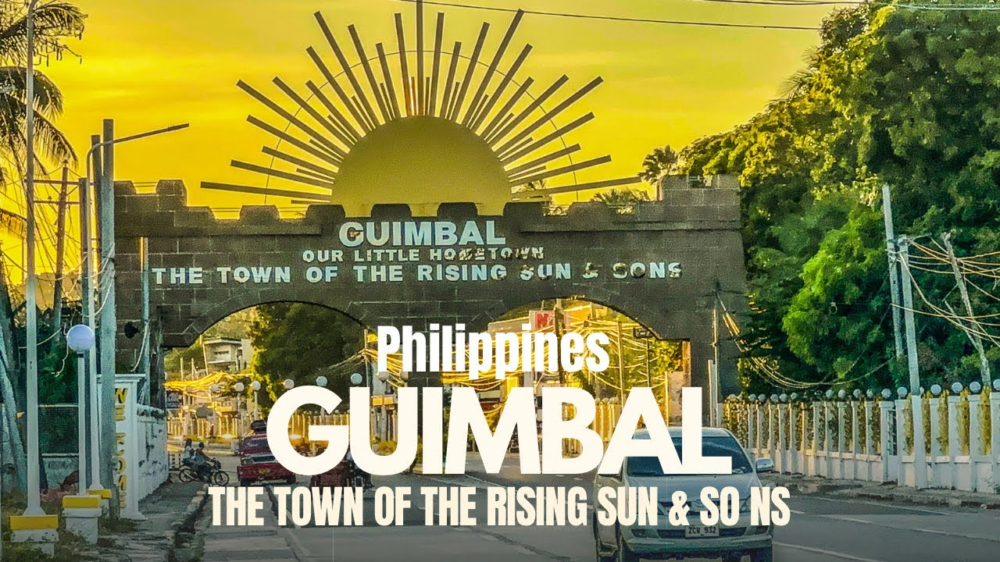
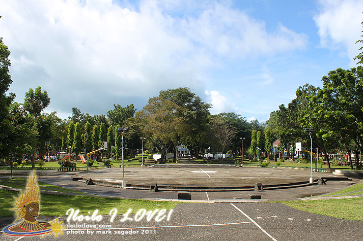
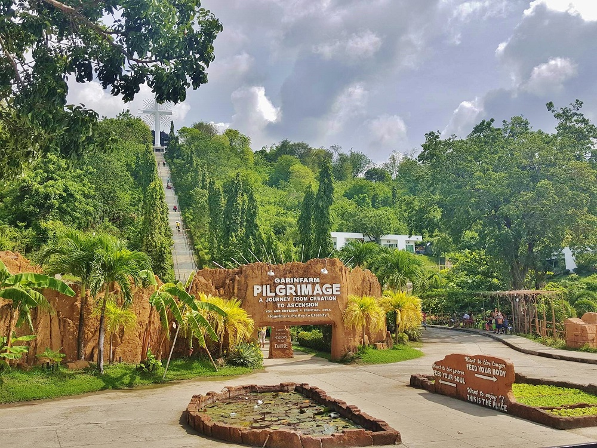
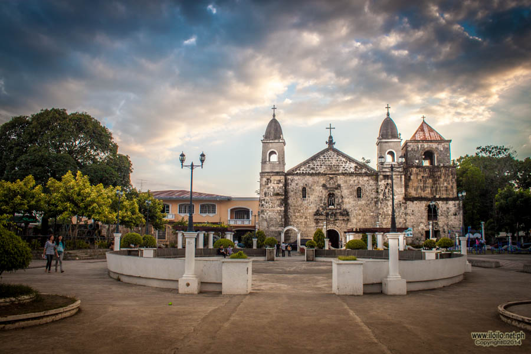
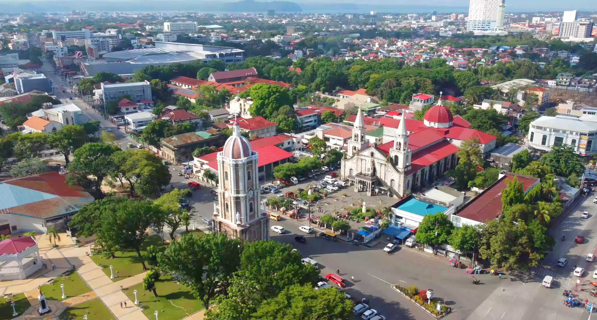

Miagao
Home of the famous UNESCO Miagao Church.

Guimbal
Known for its beaches and Paraw Regatta views.

Oton
A historic town with beautiful coastal scenery.

San Joaquin
It is famous for its "Stairway to Heaven"
Igbaras
Famous for its Waterfalls.

Tigbauan
Renowned for its blend of, natural beauty, rich history, and vibrant local culture.

Iloilo City
Culinary Capital (UNESCO City of Gastronomy)
Molo Church
St. Anne Parish Church in Iloilo is famously known as the "feminist church".